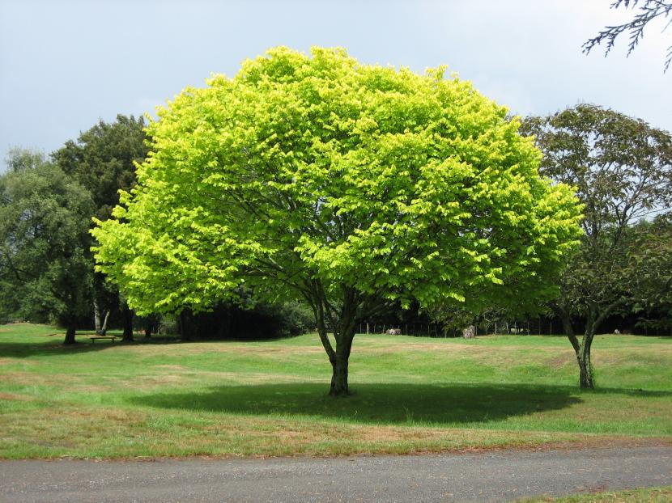

Objetives
Improving the environment
Plants can remove from the atmosphere Large amounts of carbon
Main gas of the greenhouse effect),each mature the tree consumes on
average, 6 kilograms of carbon dioxide per year. Teaching children how
important it is to plant a tree to care for and respect them, at the
same time we create a bond between the child and the school and what
it is to be responsible for a being that depends. If the school space
is not sufficient to plant one tree per child one it tree is planted
for every 2, 3, 4 children, this way the childis taught the shared
responsibility where 3 are to be responsible for the tree andeach
responsible That his partner do his duty.
Types of trees
Sauce
This type of tree is characterized mainly by the elongated form of its leaves, although sometimes also they can appear in a more rounded form. They are very resistant and rooted easily. These trees belong to the group of dioecious plants; That is, those that have female and male flowers. Some willow species, such as alpine and artic, show low to creeping growth, as do shrubs
Eucalipto
Characterized by their straight shape, these trees can measure up to 60 meters in height. Its bark is light brown and with a soft appearance. The wood of the eucalyptus is highly flammable, so be very cautious, as the flames can reach high. Its leaves are oval and gray in tone. These contain an essential oil with great decongestant and expectorant powers. This is used in the form of pills, candies, ointments, syrups, infusions or nebulizations. It can also be used to combat muscle and / or joint pain.
Ciprés
This conifer is characterized by its capacity to reach about 20 meters in height, and 60 centimeters in diameter. Growth is accelerated during the first years of life, then slowed down. They can live up to 300 years. Its trunk is straight and presents longitudinal fissures. On the other hand, its leaves are tiny; That is, they can measure from 2 to 6 millimeters in length. They are in the form of scale. Flowering occurs at the end of winter and is characterized by the production of flowers both female and male. How do we differentiate them? Very easy: the masculine form cones of green tonality and can be seen in the tips of the branches; The feminine ones are rather spherical and scaly, and at maturity their color turns from reddish to brown. Among the most common uses of cypress are the making of musical instruments such as guitars. It is also used in turning and decoration.
Drunk stick
Originating in the warm zones of Central and South America, the drunken stick is characterized mainly by the shape of its trunk. It becomes wider in the central part, with a reduction Reduction in the upper and lower parts. Its central part, which can measure up to 2 meters in diameter, serves as a water reservoir for which it is possible to resist the inconvenience to the adversities that represent the drought. Drunk stick takes advantage almost everything: its trunk, its bark and the fruit, which is characterized by a fiber similar to cotton. Over time, the bark of this tree becomes harder and gray.
Prevent soil erosion
 Relationship with humanity
Trees prevent erosion by maintaining soil moisture. They do
so thanks to their roots, which go deep into it. In this way
the plant not only remains well anchored, reducing the risk
that the wind can move it, but also prevents the terrain from ending.
In principle any tree that does not need fertile soils or, what is the
same, Mediterranean species or those that are very resistant to the wind
and that measures about 2m in height will serve you. Generally, you just
have to avoid putting fruit, because they need a very fertile soil so
that its fruit ripens properly.
Plant them in areas where erosion is a serious threat, such as slopes or
open areas that have nothing that can prevent wind, and also around the
entire perimeter of the area. But, if you want to prevent your soil from
getting eroded, I recommend that you plant shrubs and / or flowers around
the trees. This will give you a spectacular garden.